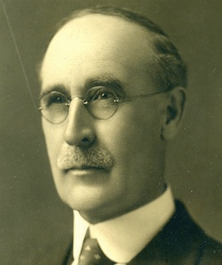

-1-MasterItem.svg)
Stories of Westminster United Church & its People / Page
12
to express his civic impulse through governing roles on nonprofit boards as
well: serving as president
of Winnipeg’s YMCA for five years and, most notably, as Chair to the University of Manitoba’s Board
of Governors from 1897 to 1914, the year of his passing. Given his background,
our reader shouldn’t
be surprised to discover that Colin was also a member of the St. Charles Country
Club, the Manitoba
Club, the Adanac Club, and the Winnipeg Burns Club. He was widely sought after
for his acumen
— and clout — and was one of the more influential men in that group of 18 men who, on October
24th,
1892, convened in his office to work out plans for a new Presbyterian Church in
Winnipeg.
FREDERICK HARSTONE, BUSINESSMAN
Like many of Westminster’s founders, Frederick was born (1865) and educated
in Ontario before relocating to Winnipeg in hot pursuit of the opportunities
that
were surfacing here for industrial pioneerism. He spent his public school years
in
his native Roseneath, and was further educated at the Toronto Business College.
In the early 1900s, now living in Winnipeg, Frederick established a fuel
business,
specialized in coal and wood. After the untimely death of his business partner
and
brother, the firm was reorganized as the Harstone Coal Company. They had their
offices at the Leckie Building (216 McDermott), later becoming the Harstone
Building — which still
stands, but is, like too many heritage buildings in the Exchange, vacant. As
with most of the church’s
founders, Frederick’s civic involvements extended beyond Westminster. He served on the Winnipeg
School Board from 1914 to 1930, and was Chairman for two years. He was a member
of the board
for United College (a union of Manitoba and Wesley Colleges in 1938) and was an
elder, trustee
and charter member of Westminster United Church. He died unmarried in Winnipeg
on July, 1947
and was buried in Elmwood Cemetery. In his will Frederick made a large bequest
to the Winnipeg
Foundation. The Foundation honoured his gift by naming a street after him in its
development
of the Alloway land that became Tuxedo and Charleswood.

Our Founders